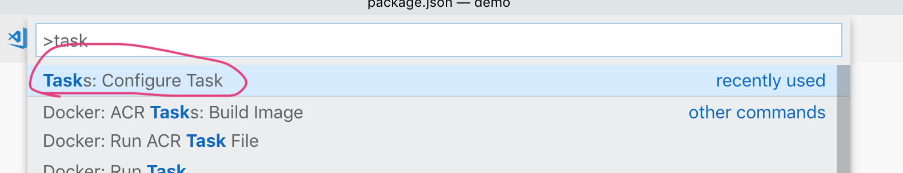

最近在复习c++，想和什么东西结合起来学，正好想到nodejs可以调用开发的c++模块代码，使用nodejs也有一段时间了，所有就比较好奇地想尝试一下，这里做一个记录
环境
- macOS
- node v10.0.0 （推荐使用nvm对版本进行管理）
- python 2.7.10 （推荐使用virtualenvwrapper对python版本进行管理）
- node-gyp v3.8.0
- clion （c++开发环境）
- vscode（c++调试环境）
- lldb （c++调试器）
- c/c++相关的基础环境（clang，cmake，g++，相关头文件）
重要依赖安装
首先使用npm安装 node-gyp，可以选择全局安装-g，也可以选择以--save-dev的形式安装；注意，环境中的python需要是2.x版本
之后，可以在路径~/.node-gyp/下找到相应的版本，我这里是 10.0.0 版本，其中有c++相关的头文件，例如我这里是在~/.node-gyp/10.0.0/include/node下，记住这个，后面需要在clion和vscode中配置需要，便于编辑器智能提示
使用clion新建一个工程，c++可执行工程，c/c++基础环境clion会自动识别；clion默认使用cmake对工程进行编译，但这里并不会使用到它的编译功能，但是需要向CMakeLists.txt中添加之前的头文件路径，这样clion就会自动提示相关内容了，添加内容示例如下，根据实际情况进行相应修改
1 | include_directories( |
在这个工程的根目录下执行 npm init，将其也作为nodejs工程的根目录，新建一个js文件：app.js，一个c++文件：src/demo.cc以及一个配置文件binding.gyp，如果看那个main.cpp不顺眼把它删掉也行；如果 demo.cc 有如下提示

那么就在 CMakeList.txt中把这个文件的相对路径加上，如下
1 | add_executable(demo main.cpp ./src/demo.cc) |
第一个示例程序编写
在binding.gyp中添加如下配置
1 | { |
target_name 是编译完成之后的模块的名称，而sources就是它的c++源文件
对demo.cc 进行编码，编写一个函数，传入姓名schwarzeni，输出一个Hello world！schwarzeni吧
1 |
|
执行编译
1 | node-gyp configure && node-gyp build |
这时，工程根路径下会对出一个build文件夹，里面的 Release/demo.node就是nodejs可以调用的模块了，在 app.js就可以调用了，实例代码如下
1 | const demo = require('./build/Release/demo') |
输入结果和预期相同
测试
clion对这方面支持的不是很好，所以就使用vscode进行代码的调试；确保安装了微软开发的c/c++支持插件。在package.json中编写npm script，如下
1 | ... |
vscode中换出控制面板 (cmd+shift+p)，选择如下选项（这里不是很清楚是否需要相关插件支持，因为我自己给vscode按了一大堆插件）

选择那个debug选项
vscode会自动在.vscode目录下生成tasks.json文件，这个文件不需要更改
vscode有专门的debug面板，而且会自动生成相关的debug配置模板
自动生成的。vscode/launch.json中进行如下配置
1 | // For more information, visit: https://go.microsoft.com/fwlink/?linkid=830387 |
preLaunchTask就是之前设置的那个任务，program是nodejs可执行文件的目录，args中填写js文件的路径
配置完毕，打开之前的那个cc文件打断点，这时，vscode的c/c++插件会提示你需要进行一些配置
观察.vscode下是否有 c_cpp_properties.json配置文件，向其中添加配置，includePath中加上node的那个头文件路径，别的都是插件自动生成的
1 | { |
这个对编译调试没有影响，主要是为了为了编辑器的智能提示和出错提示
执行调试，但是报错，说那个模块不存在，这是因为进行调试生的模块是在 build/Debug下，所有需要对app.js进行如下修改
1 | const demo = require('./build/Debug/demo') |
再次运行，可以进行调试了
更多
nodejs官网上的例子十分丰富，可以去参看